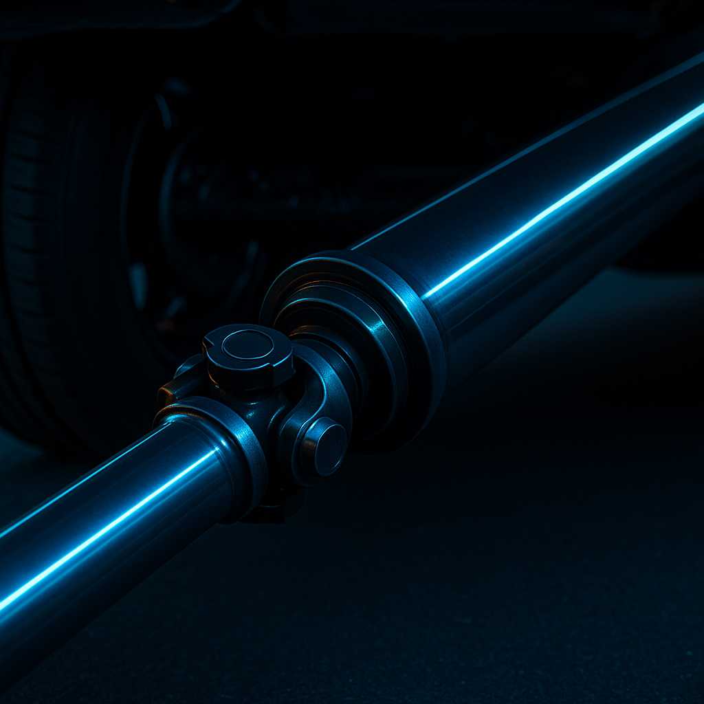
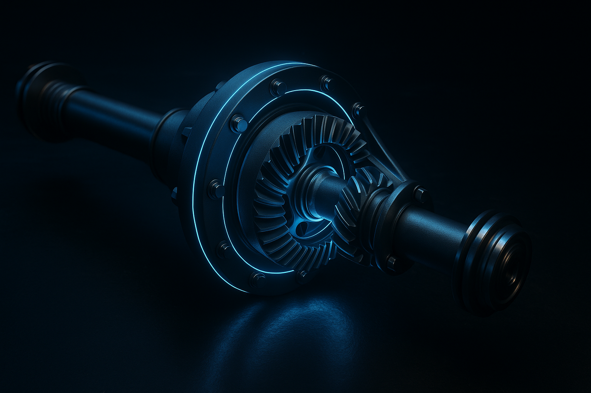
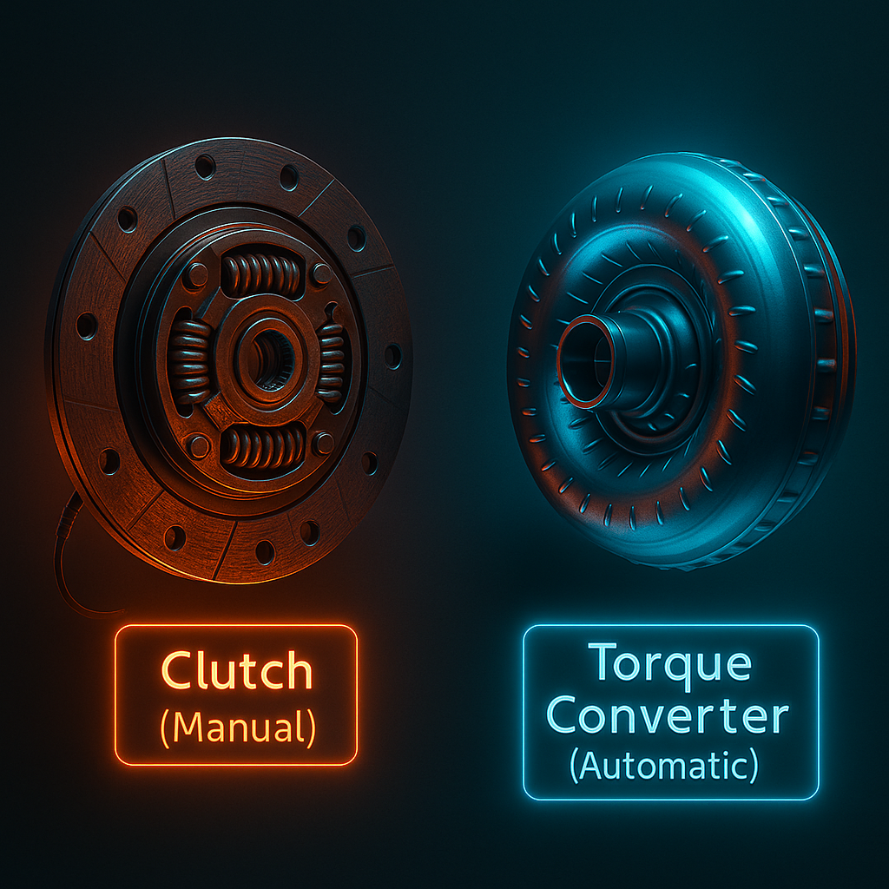

How Power Reaches the Wheels
The drivetrain is what takes all the power your engine makes and delivers it to the wheels so your car can actually move. You can think of it like the bridge between the engine and the tires.
Transmission (Gearbox)
Changes gears to control speed and torque. Lower gears = more power for takeoff. Higher gears = more speed for cruising. Manual cars use a stick shift, while automatics do it for you. It’s like a bike’s gears — lower gears help you climb, higher gears help you go faster.
Driveshaft
A long spinning shaft that carries power from the transmission to the wheels. Usually found underneath the car. It’s what makes the rear wheels spin in RWD cars.
Differential
Splits power between the left and right wheels. When you turn, one wheel spins faster — the differential makes that possible. Without it, your tires would skid when turning corners.
Clutch/Torque Converter

Clutch (Manual):
Lets you connect or disconnect the engine from the transmission
using the pedal.
Torque Converter (Automatic):
Does the same thing automatically
using fluid pressure.
Both help the car change gears smoothly without stalling or jerking.